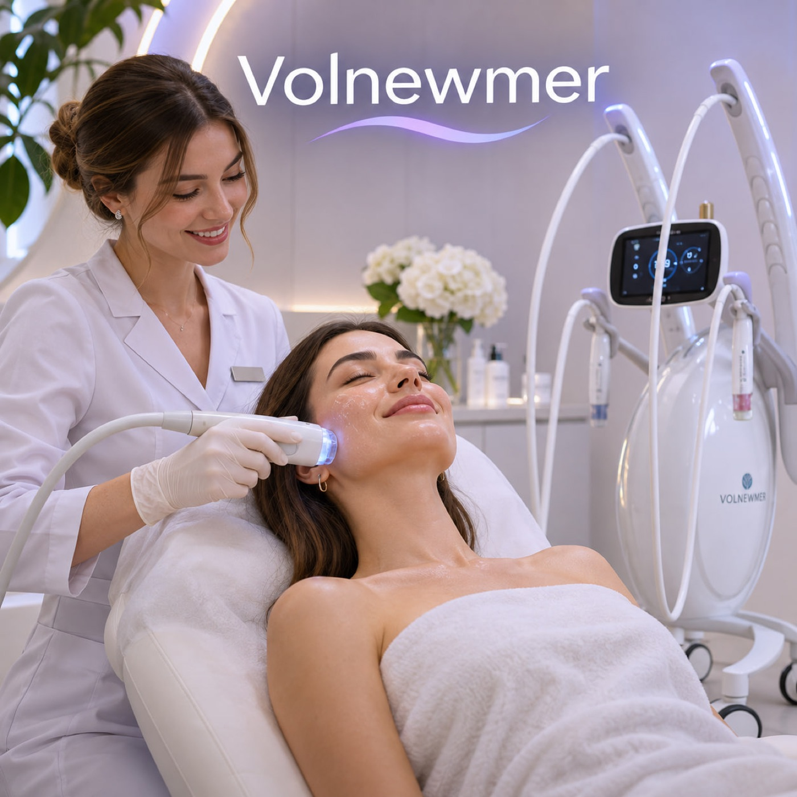
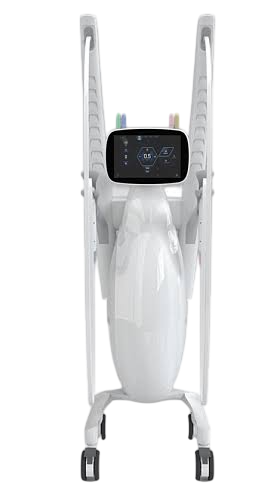
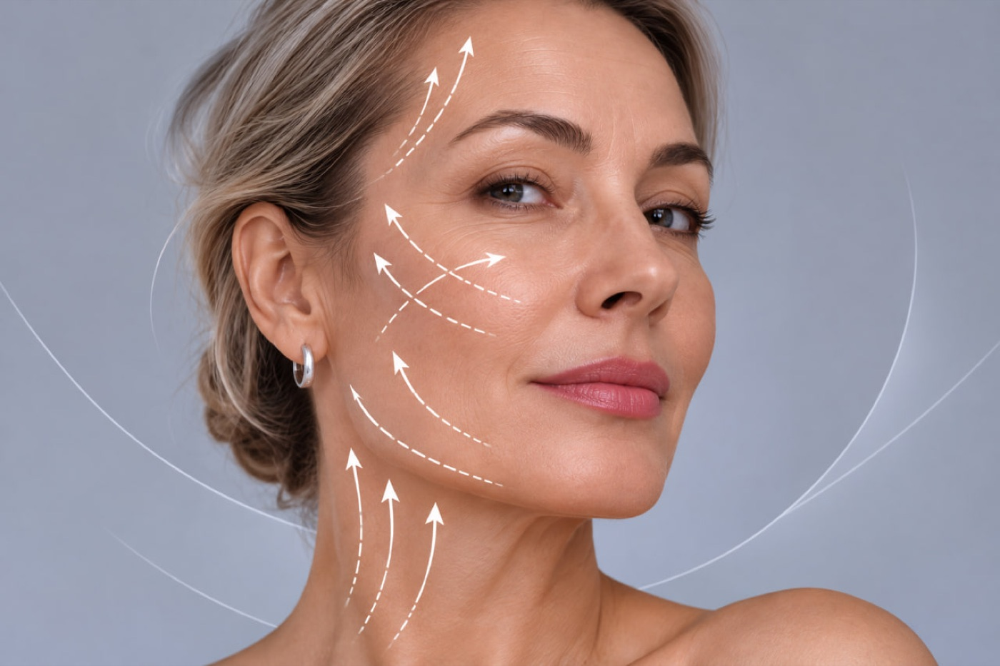
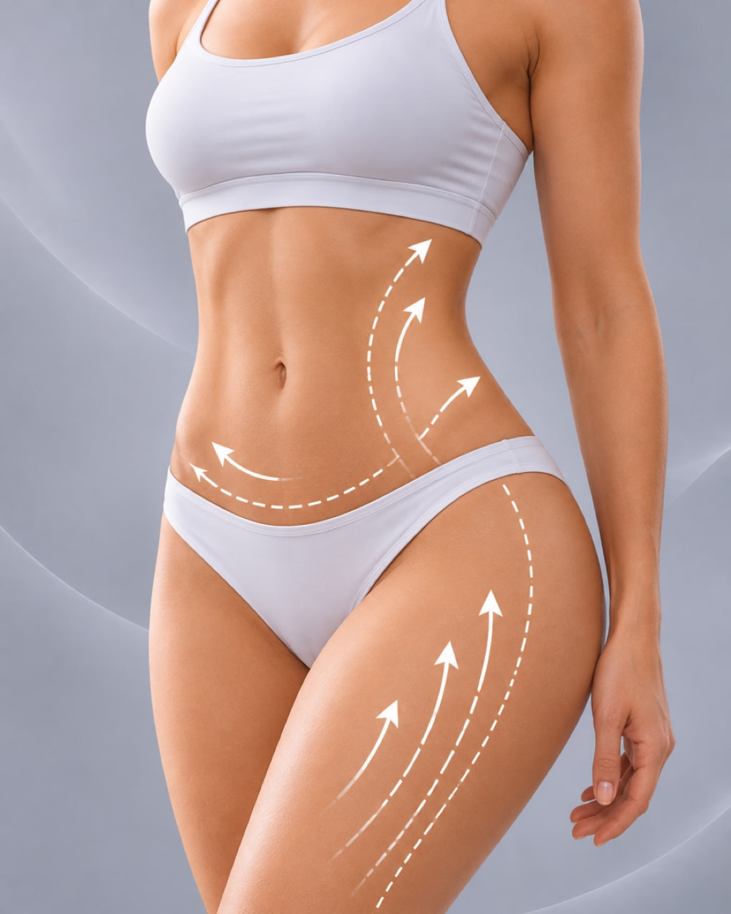
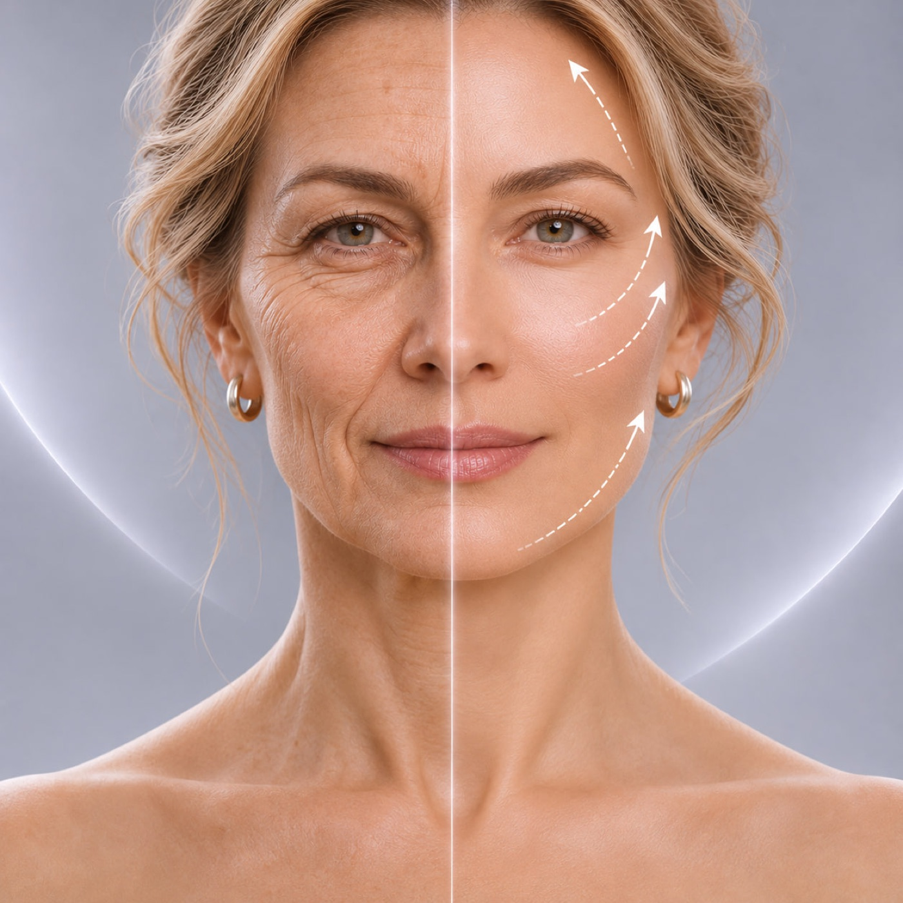
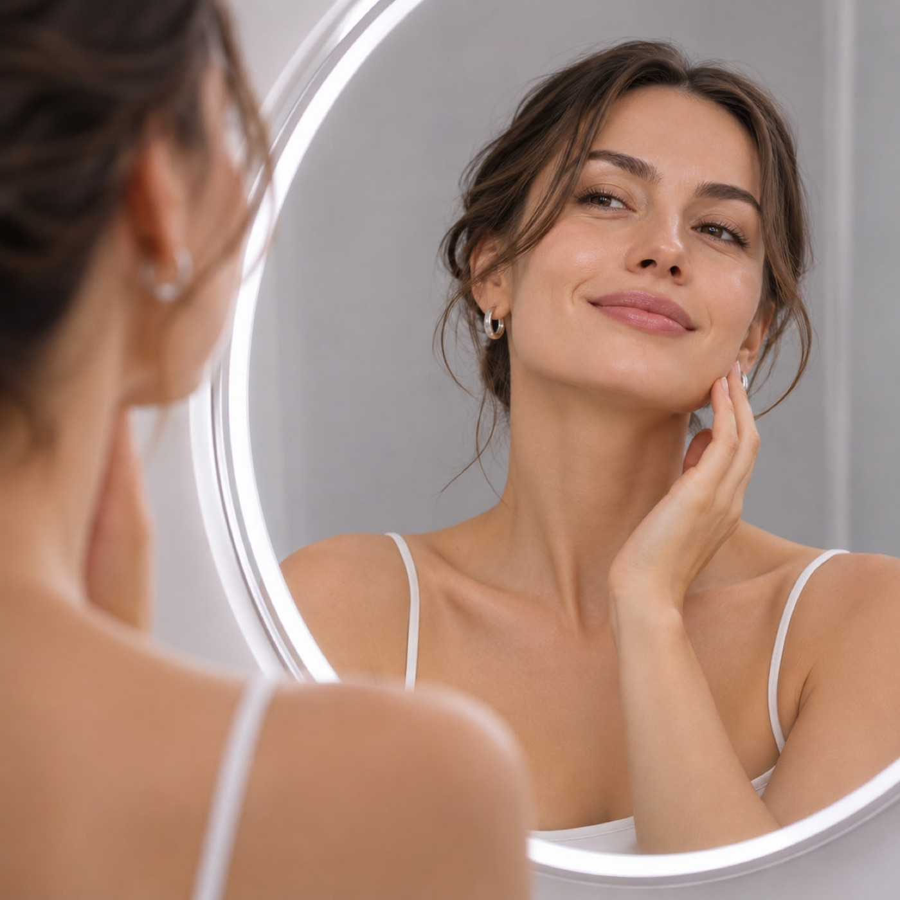
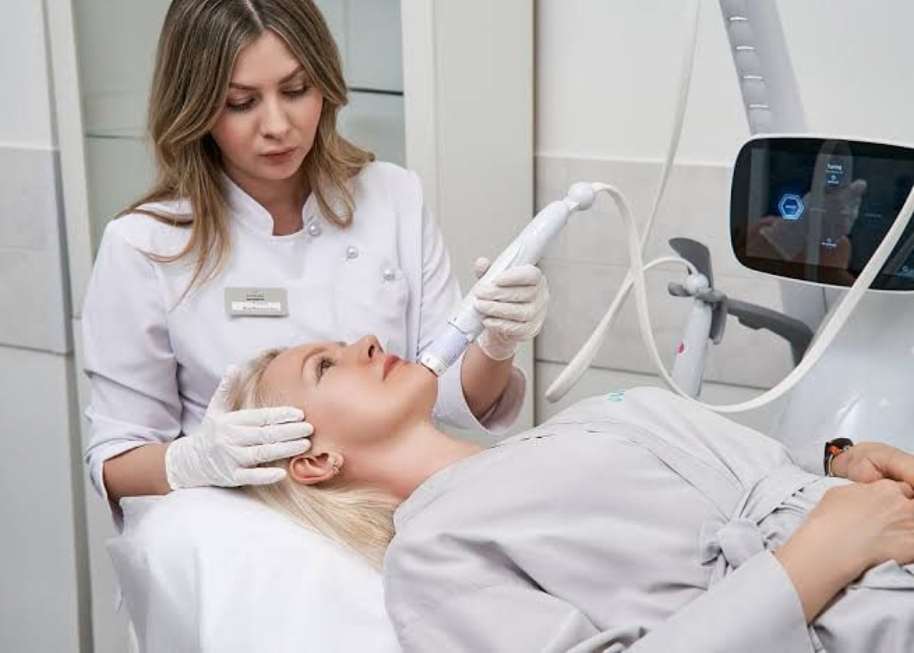

БЕЗОПЕРАЦИОННАЯ
ПОДТЯЖКА
ЛИЦА И ШЕИ
Стоимость 59 900 ₽ ДЛЯ МОДЕЛЕЙ
Цена для моделей 29 900 ₽
Предложение действует до 11.11.2026

Volnewmer
РЕВОЛЮЦИОННАЯ ПЕРЕДОВАЯ АППАРАТНАЯ МЕТОДИКА ДЛЯ ПРОФИЛАКТИКИ И КОРРЕКЦИИ ПРОЯВЛЕНИЯ ВОЗРАСТНЫХ ИЗМЕНЕНИЙ
ДЛЯ ЛИЦА И ТЕЛА



ЕСЛИ :
- Овал лица "поплыл", черты стали менее четкими, особенно в нижней части и в зоне подбородка.
- Кожа стала тонкой, дряблой, вялой, пропала плотность и тонус — как будто лицо "сползает" вниз.
- Появились морщины и заломы, особенно в области глаз, носогубок, межбровья.
- Есть второй подбородок или малярные мешки, и хочется их скорректировать без хирургии.
- Тело тоже подсказывает: живот, колени, внутренняя поверхность бедра или плечи начали терять форму.
- Вы просто не хотите синяков, отеков и долгой реабилитации, но при этом ожидаете реальный, видимый результат.

ПРОЙДИТЕ ПРОЦЕДУРУ НА АППАРАТЕ Volnewmer И ЭТО ЗНАЧИТЕЛЬНО МИНИМИЗИРУЕТ ПРОЯВЛЕНИЕ ВОЗРАСТНЫХ ИЗМЕНЕНИЙ
РЕЗУЛЬТАТЫ ДО/ПОСЛЕ
Аппарат Volnewmer
- 01
Подходит даже для самых чувствительных зон, в том числе периорбитальной области;
- 02
Имеет четыре сменных насадки и две манипулы для разных задач;
- 03
Аппарат оборудован эффективной системой защиты от перегрева;
- 04
Реальный результат подтяжки быстро проявляется после одной процедуры + эффект нарастает в течение 3х месяцев после процедуры;
- 05
Водяное охлаждение для безболезненности процедуры. Безопасность, отсутствие травм и минимальные ограничения;
- 06
Высокая скорость обработки – до 60 минут;

ЭФФЕКТИВНО ДЛЯ ПРОФИЛАКТИКИ СТАРЕНИЯ
ПРОЦЕДУРУ ОМОЛОЖЕНИЯ НА АППАРАТЕ VOLNEWMER ВЫБИРАЮТ МНОГИЕ РОССИЙСКИЕ ЗВЕЗДЫ
Об аппарате Volnewmer
Волньюмер (Volnewmer) — премиальный монополярный радиочастотный аппарат для неинвазивного лифтинга, омоложения кожи и эффекта волюмизации. Технология RF последнего поколения позволяет воздействовать сразу на несколько слоёв тканей, обеспечивая прогрев до 4 мм, а система водяного охлаждения делает процедуру безболезненной.
Volnewmer — аппарат для RF-лифтинга с частотой воздействия 6,78 МГц, работающий на водяном охлаждении, оснащённый неинвазивными многоразовыми наконечниками с большим ресурсом работы.
С его помощью можно добиваться стойкого антивозрастного воздействия на лице и теле, включая деликатные зоны верхних и нижних век. Отдельно следует отметить выраженный «волюмизирующий» эффект дополнительного объема и уплотнения кожи после процедуры.
- Выраженный волюмизирующий эффект сразу после процедуры
- 4 вида наконечников и 2 системы манипул для работы в различных зонах
- Возможность работы в деликатных зонах (в том числе на верхнем и нижнем веке)
- Непрерывное водяное охлаждение делает процедуру абсолютно комфортной
- Аппарат сертифицирован, является безопасным, неинвазивным, но главное – результативным.
НЕТ БОЛИ
НЕТ ТРАВМАТИЧНОСТИ
НЕТ РЕАБИЛИТАЦИИ
РЕЗУЛЬТАТ ЗАМЕТЕН СРАЗУ
ЭФФЕКТ НАРАСТАЕТ С ТЕЧЕНИЕМ ВРЕМЕНИ
МИНИМУМ ПРОТИВОПОКАЗАНИЙ
МОЖНО СОВМЕЩАТЬ С ДРУГИМИ КОСМЕТОЛОГИЧЕСКИМИ ПРОЦЕДУРАМИ
ЭФФЕКТИВНО ДЛЯ КОРРЕКЦИИ УЖЕ ИМЕЮЩИХСЯ ВОЗРАСТНЫХ ИЗМЕНЕНИЙ
И ДЛЯ ПРОФИЛАКТИКИ СТАРЕНИЯ
РАБОТАЕТ ПО ТЕЛУ И ЛИЦУ

Стоимость
Мы всегда проводим процедуру омоложения лица на аппарате Volnewmer монополярный RF по протоколу MAXIMUM 600 импульсов (лицо + шея) цена 59900 рублей
Стоимость процедуры по телу протокол NORMAL 450 импульсов 44900 рублей за проработку одной зоны.
До 11 действует особое предложение для моделей
ВСЕ ЛИЦО + ШЕЯ 600 импульсов стоят 29900 рублей
-
Лицо + шея
MAXIMUM 600 импульсов
59 900 ₽
-
Тело (1 зона)
NORMAL 450 импульсов
44 900 ₽
-
Для моделей до 11.11
лицо + шея 600 импульсов
59 900 ₽29 900 ₽
* [TODO: текст сноски *]
О нас
Студия IDEAL – ЭТО ПРОФЕССИОНАЛЫ, КОТОРЫЕ ЛЮБЯТ СВОЕ ДЕЛО И ДЕЛАЮТ ЕГО ОТЛИЧНО.
У нас работают квалифицированные, дипломированные врачи косметологи, которые знают, как достичь хорошего результата, хотят и умеют делать Вас, наших Клиентов – еще более красивыми, эстетичными и конечно - счастливыми.
Наша уютная Студия IDEAL находится в самом центре Москвы. Мы имеем действующую медицинскую лицензию.
У нас уютно, стерильно, безопасно и комфортно.
Добро пожаловать в IDEAL.
-
Иванова Анна Сергеевна
Врач-косметолог
-
Петрова Елена Викторовна
Врач-косметолог
-
Смирнова Ольга Андреевна
Врач-косметолог
ВОПРОС – ОТВЕТ
ЧТО ТАКОЕ «МОДЕЛЬ» И КАКИЕ ОБЯЗАТЕЛЬСТВА У «МОДЕЛИ»?
Модель – это Клиент Студии, которой оказывается услуга в полном объеме по сниженной цене. Модель – позволяет проводить фото и видео съемку оказания услуги, а также публиковать полученные материалы в социальных сетях Студии в сети интернет. Также Модель обязуется прислать свое фото Администратору социальных сетей Студии через 3 месяца после проведения процедуры.
А если не будет вообще результата то что?
Результат будет. Гарантируем договором.
Нет такого, что процедура на Volnewmer не дает эффекта.
Это очень результативная передовая процедура, которая действительно омолаживает и подтягивает кожу. За 1 сеанс. Без боли.
Чем Volnewmer отличается от игольчатого RF и других аппаратов?
Здесь важно расставить точки над «i», потому что путаница в терминах — частая причина разочарования пациентов. Игольчатый (микроигольчатый) RF предполагает точечное введение тонких электродов в кожу — это более травматичная методика с коротким, но всё же ощутимым восстановительным периодом. Volnewmer работает иначе: без единого прокола, только через насадку, которая контактирует с поверхностью кожи. За счёт большей глубины проникновения тока монополярный RF даёт более выраженный лифтинговый эффект, тогда как игольчатый чаще применяют для решения локальных задач — рубцов, растяжек, точечной коррекции рельефа.
Сравнивают Volnewmer и с ультразвуковыми SMAS-лифтингами вроде Ultraformer. Разница — в механизме и показаниях: ультразвук уплотняет мышечно-апоневротический слой (SMAS) и лучше работает там, где есть достаточный объём подкожно-жировой клетчатки, а Volnewmer через тепловое воздействие стимулирует синтез собственного коллагена и подходит пациентам со сравнительно тонкой кожей и небольшим количеством ПЖК, где ультразвуковой лифтинг может быть избыточным. Это не конкурирующие, а скорее взаимодополняющие технологии — нередко их сочетают в одном протоколе, чтобы усилить и лифтинг, и уплотнение тканей одновременно.
Какие показания к процедуре?
Volnewmer применяют при возрастных изменениях кожи лица и тела — морщинах, заломах, начальных признаках птоза, снижении упругости и эластичности. Хорошо процедура работает и с более локальными задачами: нависанием верхнего века, «мешками» под глазами, потерей чёткости овала лица, дряблостью кожи после похудения, коррекцией рубцов и растяжек. Отдельно аппарат используют для профилактики возрастных изменений — уже в 30–35 лет, когда явных проблем ещё не видно, но кожа теряет плотность, и задача в том, чтобы затормозить этот процесс, а не бороться с уже сформировавшимся птозом.
Какие противопоказания и на что обратить внимание?
Список ограничений стандартный для большинства аппаратных методик, но пренебрегать им нельзя. Процедуру не проводят при беременности и грудном вскармливании, онкологических заболеваниях, острых воспалительных процессах в зоне воздействия. Отдельная группа противопоказаний — наличие кардиостимулятора и металлических имплантов: если врач-рентгенолог когда-либо предупреждал вас, что с этими имплантами нельзя делать МРТ, то и Volnewmer в этой зоне делать тоже нельзя. Внимания требует и совместимость с другими процедурами: например, в зоне обработки не должно быть нитей и части филлеров, а после ботулинотерапии стоит выдержать паузу в 10–14 дней, потому что прогрев ускоряет метаболизм и может немного сократить срок действия препарата.
Как проходит процедура и сколько нужно сеансов?
Сначала врач осматривает кожу и определяет зоны воздействия — это может занять больше времени на первом визите, чем на последующих. Кожу очищают, наносят проводящий гель, после чего специалист насадкой аппарата обрабатывает проблемные зоны, постепенно доводя интенсивность нагрева до комфортного для пациента уровня. Благодаря системе непрерывного водяного охлаждения ощущения остаются в пределах приятного тепла, без жжения и боли — анестезия для процедуры, как правило, не требуется. Весь сеанс занимает от 40 до 60 минут в зависимости от количества обрабатываемых зон.
Эффект действительно заметен уже сразу — за счёт мгновенного термического сокращения коллагеновых волокон кожа выглядит более подтянутой. Но это лишь первый, «быстрый» эффект. Основная работа начинается позже: в течение следующих 1–3 месяцев запускается активная перестройка коллагенового каркаса, кожа постепенно уплотняется, разглаживается рельеф, чётче становится овал лица. Процедуру рекомендуют повторять 1 раз в год.
Совместим ли Volnewmer с другими процедурами?
Хорошая новость в том, что Volnewmer хорошо встраивается в комплексные протоколы. Его сочетают с биоревитализацией и мезотерапией, лазерными методиками, а также с ультразвуковым SMAS-лифтингом — в таком тандеме прогрев тканей дополняет более глубокое воздействие ультразвука, усиливая общий эффект лифтинга и уплотнения. При наличии гиалуроновых филлеров процедура тоже возможна, но зону и глубину воздействия в этом случае подбирают персонально, и врача о филлерах нужно предупредить заранее. Составлять такой комбинированный протокол должен специалист — последовательность и интервалы между процедурами напрямую влияют на итоговый результат.
Volnewmer — это больно?
Нет, благодаря непрерывному водяному охлаждению насадки процедура переносится комфортно, ощущается как приятное тепло. Анестезия обычно не требуется.
Сколько длится один сеанс?
В среднем 40–60 минут в зависимости от количества и площади обрабатываемых зон.
Через сколько виден результат?
Первый, «быстрый» эффект заметен сразу после процедуры, а основной, связанный с перестройкой коллагена, формируется постепенно — в течение 1–3 месяцев.
Есть ли реабилитация?
Полноценного восстановительного периода нет — сразу после процедуры можно вернуться к привычным делам, максимум с лёгким покраснением кожи в первые часы.
Можно ли делать Volnewmer при наличии филлеров или после ботокса?
Да, но с оговорками: зону и параметры воздействия при филлерах подбирают индивидуально, а после ботулинотерапии стоит выждать 10–14 дней.
Есть ли возрастные ограничения?
Процедура не привязана к конкретному возрасту — её делают и в качестве ранней профилактики в 30–35 лет, и как инструмент коррекции более выраженных возрастных изменений.